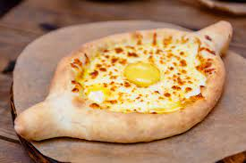

Khachapuri

Description
This Khachapuri recipe is also known as Georgian Cheese Bread. Khachapuri is a warm boat-shaped yeast bread stuffed with multiple different kinds of cheese and an egg in the center.
There are many variations of Georgian cheese bread that depend on the region and cook. This boat-shaped kind is called khachapuri adjaruli.
Ingredients
- all-purpose flour
- salt
- dry active yeast
- granulated sugar
- water
- milk
- olive oil
- Farmers cheese
- Shredded mozzarella
- Feta cheese
- eggs
- unsalted Butter
Steps
- Combine flour, salt, yeast, and sugar in a bowl. Then add warm milk. Using the hook attachment, knead the dough until it takes shape. Then add oil and knead some more.
- Place the dough in a greased bowl. Cover and let it double in size. Remove from bowl and divide the dough into 4 boat-shaped pieces. Place the bread boast on a baking sheet lined with parchment.
- Combine the three kinds of cheese and fill each bread boat. Using a pastry brush, brush with egg wash and bake for 15 minutes at 450 degrees Fahrenheit. Pull the khachapuri out of the oven, then make a well in the middle. Drop the egg in the center, add pieces of butter to the melted cheese, and bake for another 5-6 minutes.